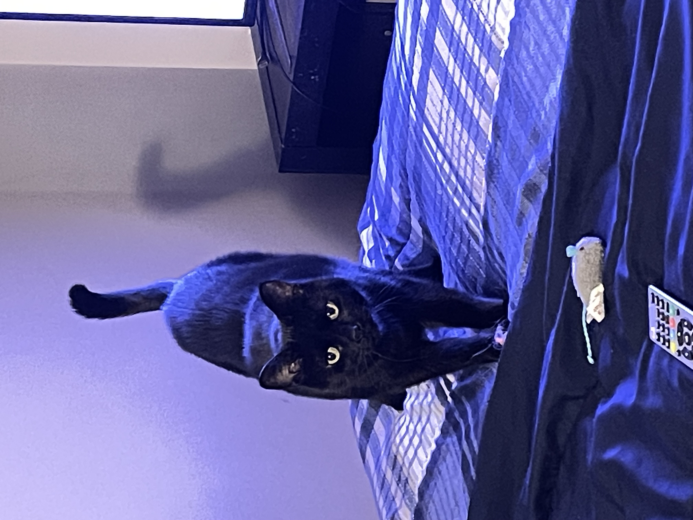
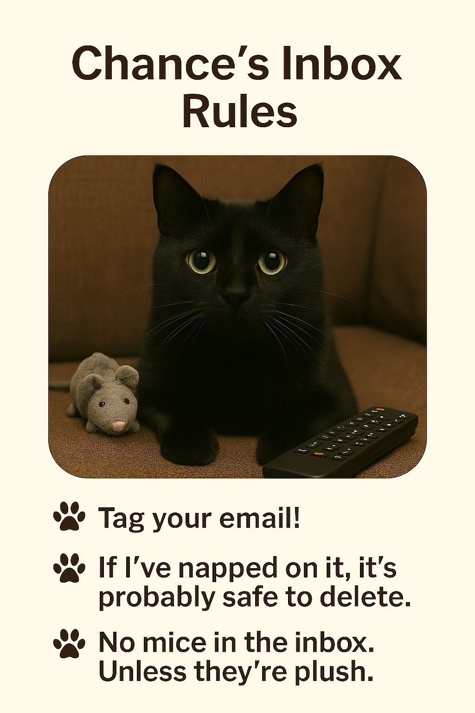

Chance's Page: Chance arrives with the grace of a feline sentinel—head high, shoulders poised, gaze unwavering.
They circle once, then sit beside you, a quiet guardian in your journey.
Their presence is steady, their loyalty unspoken but deeply felt.

I'm the mascot of our families email.

Chance is watching...